| eps.＃ |
邦題 [原題] |
メモ |
日本初回放送日 |
| 第1シーズン |
| 01a |
ジェニーはティーンエイジャーの巻[It Came from Next Door]
|
ジェニーさん登場 |
04/12/29 |
| 01b |
悪いネズミをやっつけろ！の巻[Pest Control]
|
ジェニーさん首だけになる |
04/12/29 |
| 02a |
遊園地は大騒ぎ！の巻[Raggedy Android] |
ジェニーさん人間に化ける |
04/12/30 |
| 02b |
学校が火事だぁ～！の巻[Class Action] |
ジェニーさん学校へ行く |
04/12/30 |
| 03a |
あたしのボーイフレンド？の巻[Attack of the 5 1/2 Ft. Geek] |
ジェニーさんジェルドンにつきまとわれる |
04/12/31 |
| 03b |
タック砦を取り返せの巻[Doom with a View] |
ジェニーさんクラスターと戦う |
04/12/31 |
| 04a |
あこがれのピアスの巻[Ear No Evil] |
ジェニーさんピアスにあこがれる |
05/01/01 |
| 04b |
UFOの無免許運転の巻[Unlicensed Flying Object] |
ジェニーさんUFOで暴走するブラッドに手をやく |
05/01/01 |
| 05a |
パーティ大好き！の巻[Party Machine] |
ジェニーさん自宅でパーティーをひらく |
05/01/02 |
| 05b |
あれ？通じな～い？の巻[Speak No Evil] |
ジェニーさん日本へゆく（英語音声もおすすめ） |
05/01/02 |
| 06a |
見えない敵の巻[See No Evil] |
ジェニーさん目玉がなくなる |
05/01/03 |
| 06b |
泥だらけのパーティーの巻[The Great Unwashed] |
ジェニーさんおしゃれをする |
05/01/03 |
| 07a |
ロボットなんて大嫌いだの巻[Return of the Raggedy Android] |
ジェニーさん人間の女の子になる |
05/01/04 |
| 07b |
呼ばれてばっかりの巻[The Boy Who Cried Robot] |
ジェニーさん子供の相手をさせられる |
05/01/04 |
| 08a |
大変！ 妹たちが押し寄せてくる～！の巻[Sibling Tsunami] |
ジェニーさん妹がたくさん出来て喜ぶ |
05/01/30 |
| 08b |
どうしよう、あたしドロップアウト？の巻[I Was a Preschool Dropout] |
ジェニーさん幼稚園生になる |
05/01/30 |
| 09a |
ジェニーどうしちゃったの？の巻[Hostile Makeover] |
ジェニーさん二次成長？ |
05/02/05 |
| 09b |
勝利をつかめ！の巻[Grid Iron Glory] |
ジェニーさんアメフトをする |
05/02/05 |
| 10a |
殺しのドレスの巻[Dressed To Kill] |
ジェニーさんスーパーCrust Cousinsと戦う |
05/02/06 |
| 10b |
恋のかけひきの巻[Shell Game] |
ジェニーさん恋をする |
05/02/06 |
| 11a |
夢見るロボットになりた～いの巻[Daydream Believer] |
ジェニーさん昼間から夢を見る |
05/02/12 |
| 11b |
ジェニー大ピンチの巻[This Time With Feeling] |
ジェニーさん笑い転げて痛がる |
05/02/12 |
| 12a |
ボーイフレンドはクールが一番？の巻[Saved by the Shell] |
ジェニーさんドンプリマとデートする |
05/02/13 |
| 12b |
ジェニーロボット大会へ行くの巻[Tradeshow Showdown] |
ジェニーさんロボット大会へ行く |
05/02/13 |
| 13a |
ウィズリーのワンダフルワールドの巻[The Wonderful World of Wizzly] |
ジェニーさん人間に宣戦布告 |
05/02/19 |
| 13b |
ママ！うるさく言わないで！の巻[Call Hating] |
ジェニーさんイケメン転校生に惚れる |
05/02/19 |
| eps.＃ |
邦題 [原題] |
メモ |
日本初回放送日 |
| 第2シーズン |
| 14 |
おしゃれ戦争の巻 [Victim of Fashion]
|
ジェニーさんファッションリーダーを目指す |
05/09/10 |
| 15a |
ブラッドはヒーローの巻[Last Action Zero] |
ジェニーさん脳味噌まるだしになる |
05/09/17 |
| 15b |
頭脳で勝負の巻[Mind Over Matter] |
ジェニーさん脳味噌むきだしになる |
05/09/17 |
| 16a |
未来の悲劇の巻[Future Shock] |
ジェニーさんをブラッドを殺害 |
05/09/24 |
| 16b |
ママの授業を阻止せよ！の巻[Humiliation 101] |
ウェイクマン博士学校へ講義にしに行く |
05/09/24 |
| 17a |
ジェニーの恋人は犬？の巻[Love 'Em or Leash 'Em] |
ジェニーさんボーイフレンドができる |
05/10/01 |
| 17b |
ティーンチーム参上の巻[Teen Team Tim] |
ジェニーさんヒーローチームに入る |
05/10/01 |
| 18 |
ジェニーと一緒にクリスマスの巻[A Robot For All Seasons] |
クリスマススペシャル |
06/12/25 |
| 19a |
パジャマパーティの巻[Pajama Party Prankapolooz] |
ジェニーさんパジャマパーティーに行く |
05/10/02 |
| 19b |
力を合わせてジェニーを救えの巻[aSister Sledgehammer] |
ジェニーさん敵になる 妹再び |
05/10/02 |
| 20a |
初めてのダンスパーティーの巻[Dancing in My Shell] |
ジェニーさんダンスパーティーに行く |
05/10/08 |
| 20b |
世界を回って体を探せ！の巻[Around the World in Eighty] |
ジェニーさんバラバラに ひえ～～！！ |
05/10/08 |
| 21a |
最強ロボット・アルマゲドロイドの巻[Armagedroid] |
ウェイクマン博士過去を語る |
05/10/09 |
| 21b |
キルゴア誕生の巻[Killgore] |
ジェニー VS キルゴア |
05/10/09 |
| 22a |
僕はヒーローの巻[A Pain in my Sidekick] |
タック、シルバーシェルの相棒になる |
07/03/01 |
| 22b |
あこがれの一人暮らしの巻[Crash Pad Crash] |
ジェニーさん一人暮らしを始める |
07/03/01 |
| 23a |
盗まれた設計図の巻[Designing Women] |
ジェニーさんヴェクサスに設計図を盗まれる QT2登場 |
07/03/02 |
| 23b |
ロボットバトルの巻[Robot Riot] |
ジェニーさんロボットバトルに出場する |
07/03/02 |
| 24a |
僕だってヒーローの巻[Bradventure] |
ブラッドの冒険 そしてメロディ登場 |
07/03/05 |
| 24b |
ママの彼氏の巻[Mama Drama] |
ママに彼氏ができる |
07/03/05 |
| 25a |
ジェニードールに襲われる！の巻[Toying With Jenny] |
ジェニードール発売される |
07/03/06 |
| 25b |
ティーンエイジ・ミュータント・トラブルの巻[Teenage Mutant Ninja Troubles] |
ジェニーさんとミスティの学園生活 |
07/03/06 |
| 26a |
ティーンの女王様の巻[Teen Idol] |
ジェニーさんあがめられる |
07/03/07 |
| 26b |
なつかしのシェルドンの巻[Good Old Sheldon] |
シェルドン老の宇宙冒険物語 |
07/03/07 |
| 27 |
クラスターの侵略 ~地球最後の日 その1[Escape From Cluster Prime (part1)] |
TVムービー 長編エピソード |
08/01/05 |
| 28 |
クラスターの侵略 ~地球最後の日 その2[Escape From Cluster Prime (part2)] |
08/01/05 |
| eps.＃ |
邦題 [原題] |
メモ |
日本初回放送日 |
| 第3シーズン |
| 29a |
恋は大量破壊兵器の巻[Weapons of Mass Distraction] |
ジェニーさんの新しい彼氏はメカ怖がり |
07/03/08 |
| 29b |
ママのホームスクールの巻[There's No Place Like Home School] |
ジェニーさんママのホームスクールをうける |
07/03/08 |
| 30a |
恋するブラッドの巻[No Harmony with Melody] |
メロディとブラッドがいい感じに |
07/03/09 |
| 30a |
落第なんかするもんか！の巻[Tuckered Out] |
ジェニーさんタックの進級の手伝いをする |
07/03/09 |
| 31a |
私が永久停止？の巻[Spoonful of Mayhem] |
ジェニーさんスパイパトロールのいやがらせをうける |
07/03/12 |
| 31b |
キルゴアの逆襲！の巻[Enclosure of Doom] |
ジェニーvsキルゴア再び |
07/03/12 |
| 32a |
怪盗ルビーロケットの巻[Girl of Steal] |
怪盗ルビーロケット登場（自作自演） |
07/09/03 |
| 32b |
ヒーローは休業中の巻[Mist Opportunities] |
ミスティ再登場 |
07/09/03 |
| 33a |
悪の軍団登場の巻[The Legion of Evil] |
B級ヴィランチーム集結 |
07/09/03 |
| 33b |
ヤキモチ大作戦の巻[The Price of Love] |
ジェニーにやきもち焼かせる作戦 |
07/09/03 |
| 34a |
女優になりたい！の巻[Stage Fright] |
ジェニーさん演劇をする |
07/09/04 |
| 34b |
家族って最高！の巻[Never Say Uncle] |
ウェイクマン博士の妹登場 |
07/09/04 |
| 35a |
謎の伝染病の巻[Infectious Personality] |
ジェニーさんに触ると病気に感染 |
07/09/04 |
| 35b |
ゴミにはご注意の巻[Trash Talk] |
ゴミ星でヴェクサスと遭遇 |
07/09/04 |
| 36a |
その名は00シェルドンの巻[Agent Double-O Sheldon] |
シェルドン、ジェニーをストーカーする |
07/09/05 |
| 36b |
無敵のタック様の巻[Indes-Tuck-tible] |
タック危険に怯えてひきこもりになる |
07/09/05 |
| 37a |
人形の復讐の巻[Puppet Bride] |
ジェニーさん人形に結婚されそうになる |
07/09/05 |
| 37b |
ウィズリーの歴史ワールドの巻[Historionics] |
ジェニーさんディズニーもどきの島に漂流 |
07/09/05 |
| 38a |
僕、結婚するんだ!!の巻[Ball and Chain] |
ブラッド宇宙暴走族のタミーと結婚 |
07/09/06 |
| 38b |
働くのって大変の巻[Labor Day] |
お金に困ってレンタルジェニーさん |
07/09/06 |
| 39a |
宇宙暴走族の星の巻[Voyage to the Space Biker's Planet] |
ジェニーさんバイク爆走 |
07/09/06 |
| 39b |
女王蜂リターンズ！の巻[Queen Bee] |
ヴェクサス様ティーンになる |
07/09/06 |
| 40a |
燃えろ！サムライ魂！の巻[Samurai Vac] |
日本製サムライ掃除機ロボ |
07/09/07 |
| 40b |
ウェイクマン家最大の危機？の巻[Turn Coats] |
妹達が襲ってくる |
07/09/07 |
他、「My Life as a Teenage Wakeman」「No Honor Among Robots」というエピソードもあったようだが、キャンセルされたようだ。
ニコロデオンでは「オーイェイ・カートゥーンズ」でその他のRob Renzetti短編作品も放送しているので、興味がある方はどうぞ。ティーンエイジロボットのパイロット版「My
Neighbor was a Teenage Robot」と見比べてみると面白い。（海外では放送されなくなっているようなので、これを見比べられる日本はすこし幸せな状況）シリーズ化したやつのほうが面白いですが、これもまた一興。
※2009年9月30日（水）に日本でのニコロデオンのチャンネル放送は終了。
| My Neighbor Was a Teenage Robot |
My Life as a Teenage Robot |
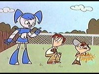
こんな感じだったのが・・・ |
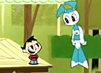
こんなにキュートにヽ(´ー｀)ノ |
けっこうイカツイ感じで、色も濃い。肩のパッドのようなパーツがあったり、スカート部分もボルトが。
足のモモの部分のパーツが棒のように細い。
手も青い。 |
色も薄くなり、よりなめらかで華奢なボディに。
足も一体化したようなフォルム。
手が白くなった。
なにより目が大きくキュートになった。 |
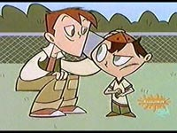
お友達の兄弟も若干変わった。 |
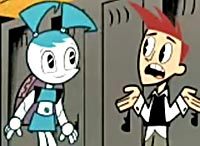
よりデザイン化され、スッキリと。 |
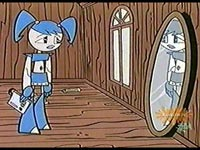
ロボットである自分をみてガックリ。 |
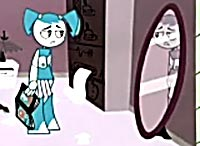
同じシーンだが、よく見ると部屋がハイテク化されてる。 |
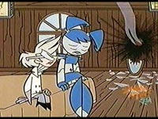
一番印象が変わったのはこの人かも。ウェイクマン博士。 |
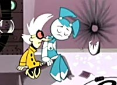
かなりぶっとんだ人になったようだ。メガネに色はつくし、白衣も黄色に。 |

かなりオンボロな家だったことがわかる。しかも木造。 |
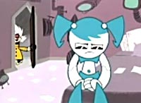
ジェニーのラインが柔らかくなったことがよくわかる。 |
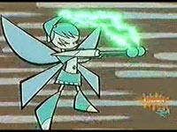
飛行形態。翼は蝶のような羽根だった。 |
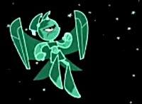
よりロボっぽくなった羽根。一応、四つ羽根らしき痕跡がのこってる。 |

ツインテールビーム！！ |
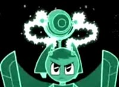
よりハデに、クールになった武装。 |
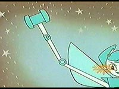
彼女は手足はいろんな形に変わるのです。ピコピコハンマー！！ |
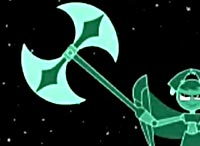
より凶悪になったような・・・ゲッターかおまえは。 |